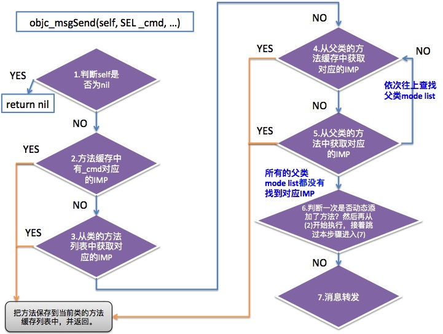

objc_msgSend分析
我们都知道调用的方法，系统都会以消息的方式来发送，比如：
Person *p = [[Person alloc] init];
[p test];
// 本质发送消息
((void (*)(id, SEL))(void *)objc_msgSend)((id)p, sel_registerName("test"));
苹果是通过汇编的实现objc_msgSend，在ARM架构下的源码：
/********************************************************************
*
* id objc_msgSend(id self, SEL _cmd,...);
*
********************************************************************/
ENTRY objc_msgSend
MESSENGER_START
/*
#define LNilReceiver_f 9f
r0代表第一个参数self
cbz：如果self为nil，那么就调转到LNilReceiver
*/
cbz r0, LNilReceiver_f
// id类型的第一个字节就是isa
ldr r9, [r0] // r9 = self->isa
/*
NORMAL 0
从缓存列表中找到_cmd对应的IMP:
如果找到，会返回对应的IMP;
没有找到，则返回LCacheMiss
*/
CacheLookup NORMAL
// calls IMP or LCacheMiss
/*
没有在缓存中找到_cmd对应的IMP，就会去方法列表中找.
但是这里没有这么简单，后面再说。
*/
LCacheMiss:
MESSENGER_END_SLOW
ldr r9, [r0, #ISA] // class = receiver->isa
b __objc_msgSend_uncached
/*
self为nil的一些处理
*/
LNilReceiver:
// r0 is already zero
mov r1, #0
mov r2, #0
mov r3, #0
FP_RETURN_ZERO
MESSENGER_END_NIL
bx lr
// 结束消息发送
LMsgSendExit:
END_ENTRY objc_msgSend
上面代码中有提到如果方法缓存列表中没有该方法的缓存，就会执行_objc_msgSend_uncached：
STATIC_ENTRY _objc_msgSend_uncached
// THIS IS NOT A CALLABLE C FUNCTION
// Out-of-band r9 is the class to search
stmfd sp!, {r0-r3,r7,lr}
add r7, sp, #16
sub sp, #8 // align stack
FP_SAVE
// receiver already in r0
// selector already in r1
mov r2, r9 // class to search
MI_CALL_EXTERNAL(__class_lookupMethodAndLoadCache3)
mov r12, r0 // r12 = IMP
movs r9, #0 // r9=0, Z=1 for nonstret forwarding
FP_RESTORE
add sp, #8 // align stack
ldmfd sp!, {r0-r3,r7,lr}
bx r12
END_ENTRY _objc_msgSend_uncached
可以看出，在_objc_msgSend_uncached中会调用C语言的一个函数_class_lookupMethodAndLoadCache3
IMP _class_lookupMethodAndLoadCache3(id obj, SEL sel, Class cls)
{
return lookUpImpOrForward(cls, sel, obj,
YES/*initialize*/, NO/*cache*/, YES/*resolver*/);
}
这个函数中做了以下几件事：
- 是否开启GC(垃圾回收)；
- 还是会尝试去缓存中获取IMP；
- 再从类的方法列表中获取IMP，获取到了再保存到方法列表缓存中，返回IMP；否则
- 循环变量父级的方法列表：
- 首先会从父类的方法缓存中查找对应的IMP，获取到后再把父级中的方法缓存保存到当前类的方法缓存；否则
- 从父类获取SEL对应的方法，然后把IMP添加到本来的方法缓存列表中；否则
- 调用_class_resolveMethod，尝试一次方法解析，但不会添加到方法缓存列表中；否则
- 使用消息转发，把SEL转发出去。
苹果以汇编的形式来实现objc_msgSend，但是对于看不懂汇编的人来说就是种折磨，不过还好，国外的大牛以C的方式实现了objc_msgSend：Obj-C Optimization: The faster objc_msgSend
id c_objc_msgSend( struct mulle_nsobject *self, SEL _cmd, ...)
{
struct mulle_objc_class *cls; // 类
struct mulle_objc_cache *cache; // 缓存列表
unsigned int hash;
struct mulle_objc_method *method; // 方法列表
unsigned int index; // 当前索引值
if( self)
{
cls = self->isa;
cache = cls->cache;
hash = cache->mask;
index = (unsigned int) _cmd & hash;
do
{
method = cache->buckets[ index];
if( ! method)
goto recache;
index = (index + 1) & cache->mask;
}
while( method->method_name != _cmd);
return( (*method->method_imp)( (id) self, _cmd));
}
return( (id) self);
recache:
/* ... */
return( 0);
}
下图为整个objc_msgSend的流程图：
